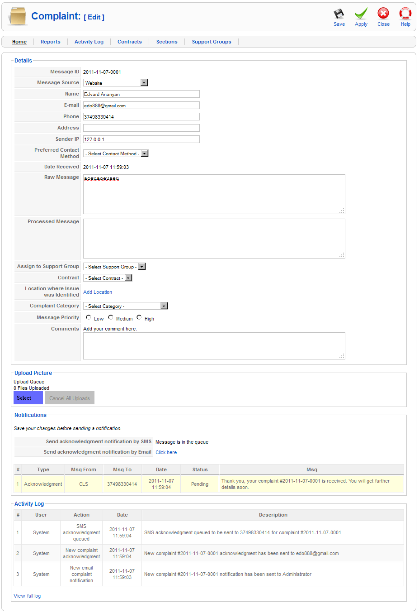

| Adding/Editing/Processing/Resolving Complaints |
Description
Here you can add/edit/process/resolve complaints depending on your current role.
- System Administrator: Can do everything. No one should have this permission except the site administrator.
- Level 1: Manage complaint data and assign them to Level 2 groups.
- Level 2: Responsible for resolving the complaints assigned by Level 1.
- Supervisor: Can add comments and view all complaints.
- Guest: Can view reports and statistics.
After processing/resolving the complaint you can send a notification message to the sender party from the Notifications section.
Screenshot

Toolbar
At the top right you will see the toolbar:
Save. Saves and/or creates the complaint if doesn't exist. Apply. Saves and/or creates the complaint if doesn't exist and keeps the form in front of you. Close. Cancels unsaved changes and closes the form. Help. Opens this Help Screen.
Quick Tips
You can upload a picture which will be assigned to the complaint. If you don't see a button described here or cannot edit a section, it means that you don't have permission to do the appropriate action. If you are an admin and want to add/modify roles for the users, you need to do that from Site -> User Manager.
|